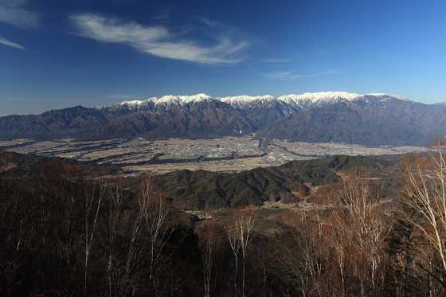
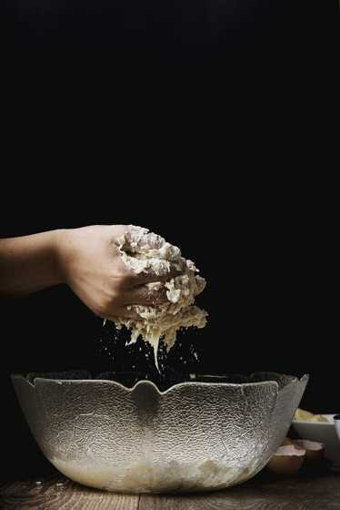
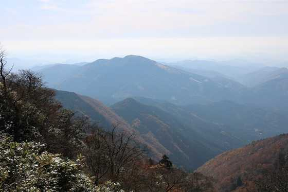
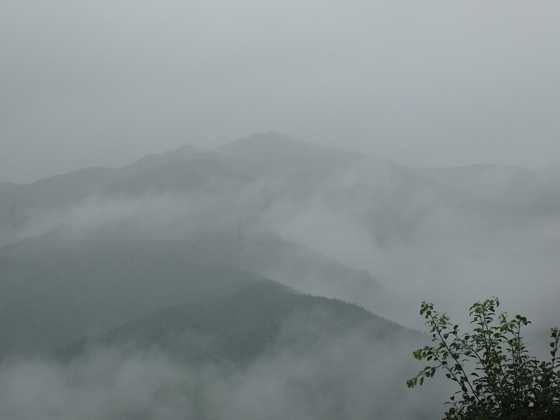

ぱん工房◯
長野県木島平村のパン屋
朝いちばんの焼きたてを、地球にも体にもやさしく。

お店の由来・想い
ぱん工房◯は、元中学校教師の宮田伸也さんが、教職を離れたのち調理や製パンを学び、2024年4月に自宅を改装して開いたパン屋です。「朝食に焼きたてのパンを届けたい」という思いから、平日は早朝から営業しているとされています。
木島平村の広報では、「地球にやさしく、体にやさしく、食品を廃棄しない」という考えが店づくりの柱として紹介されています。地域の方の育てた野菜を使うなど、土地とのつながりも大切にしているお店です。
※店名「◯」の意味・由来は確認できていないため、記載していません。




メニュー
- 営業時間
- 準備中
- 定休日
- 準備中
- 価格
- 準備中
- 電話
- 準備中
品揃えは日によって変わります。詳しくはInstagramをご確認ください。


口コミ
イメージ例
朝早くから焼きたての香りがして、食パンをその場で買って帰りました。(創作のイメージです)
イメージ例
季節の食材を使ったパンが楽しみで、村に来たときは立ち寄りたくなります。(創作のイメージです)
イメージ例
やさしい味わいで、朝ごはんにちょうどいいパンでした。(創作のイメージです)
アクセス
- 所在地
- 〒389-2301 長野県下高井郡木島平村穂高3131-15
- 電話
- 準備中
- @marupan_kijimadaira

写真はフリー素材のイメージです。店舗の実際の商品・店内・外観ではなく、他地域で撮影されたものや撮影地が不明なものを含みます。
写真クレジット
- 山並みのイメージ(images/hero-mountain.jpg): Alpsdake / CC BY-SA 4.0
- クロワッサンのイメージ(images/band-1.jpg): Herry Wibisono (herryway) / CC0 1.0
- パン棚のイメージ(images/band-3.jpg): Clark Young / CC0 1.0
- パンのイメージ(images/menu-1.jpg): Ben Garratt / CC0 1.0
- サワードウのスライスのイメージ(images/menu-2.jpg): Angel Ganev / CC BY 2.0
- バゲットのイメージ(images/menu-3.jpg): jules / stonesoup / CC BY 2.0
- 食パンのイメージ(images/menu-4.jpg): Shixart1985 / CC BY 2.0
- 小麦粉とバターのイメージ(images/menu-5.jpg): markusspiske / CC0 1.0
- 粉を扱う手元のイメージ(images/about-1.jpg): Gaelle Marcel (gaellemm) / CC0 1.0
- 山並みのイメージ(images/about-2.jpg): Yama0904 / CC BY-SA 4.0
- 小麦畑のイメージ(images/about-3.jpg): pakku / CC BY 3.0
- 麦の穂と空のイメージ(images/about-4.jpg): Jez Timms / CC0 1.0
- 霧の山のイメージ(images/access-1.jpg): ikm / CC BY-SA 3.0